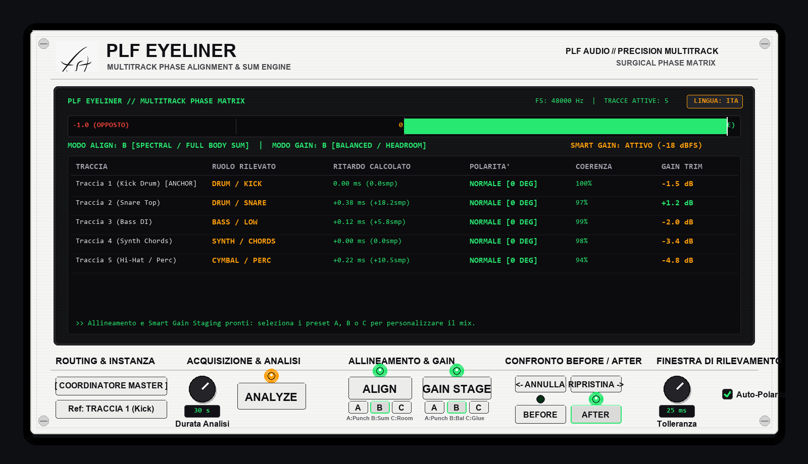

Processore di allineamento di fase e tempo chirurgico concepito sui principi di Auto-Align e VocALign, con un'interfaccia hardware fotorealistica ad alto contrasto. Risolve istantaneamente le cancellazioni di fase e il comb-filtering tra microfoni multipli di batterie acustiche, bassi DI/mic, cori e voci doppie.

Ingegneria di precisione per eliminare le cancellazioni acustiche e restituire corpo, transienti e impatto solido al tuo mix.
Le tracce secondarie (Companion) comunicano in tempo reale con l'istanza Master all'interno della memoria di processo di Ableton Live a zero overhead e senza bisogno di routing esterni complessi.
Algoritmo frazionario di precisione decimale: allinea i segnali al decimo di campione per micro-spostamenti temporali trasparenti, senza mai sfocare i transienti o alterare il timbro.
Scegli la finestra temporale di analisi statistica durante la riproduzione del brano: più a lungo ascolta il segnale, più stabile e chirurgica sarà la matrice di allineamento calcolata.
Riconoscimento dei livelli con target a -18 dBFS di headroom ottimale e 3 profili di risposta: A (Punch) per beat e batterie, B (Balanced) per linearità trasparente, C (Glue) per calore analogico.
Tre strategie di correlazione: A (Transient) attacco nitido e colpo secco, B (Spectral) massima somma di corpo e basse frequenze (sub/kick), C (Acoustic) preservazione dell'ambiente naturale.
Equalizzatore dinamico a 6 bande con nodi interattivi, display con doppio analizzatore FFT a 60 FPS o sonogramma a cascata Waterfall (stile RX), e 3 curve correttive automatiche.
Pochi secondi per allineare una batteria multitraccia o tracce doppie di voce e chitarra.
Trascina PLF Eyeliner sulla traccia di riferimento principale (ad es. Overhead L della batteria o la Lead Vocal). Imposta la modalità su MASTER.
Trascina PLF Eyeliner sulle altre tracce (ad es. Snare Top, Kick In, Tom, Room, Backing Vocals). Imposta la modalità su COMPANION e collega al canale Master.
Fai partire Ableton Live per qualche battuta. Premi ANALYZE & ALIGN: i ritardi sub-sample e le polarità vengono calcolati e applicati istantaneamente a zero latenza!
Scopri l'intera collezione audio firmata PLF Audio Lab per Ableton Live
Reverb algoritmico a 21 motori, 33 preset e visualizzatore a 60 FPS.
Scheda Space DesignerColorazione vintage, saturatore a valvole e 4 stadi sonori in mogano.
Scheda Little Cosm